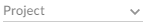
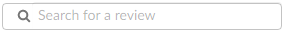

Reviews list page quick reference
The Reviews page lists code reviews that are in progress, and code reviews that are complete.
- Log in to Swarm.
- Click Reviews in the main menu.
Jump directly to a specific area of the Reviews page using the following links:
Opened and Closed tabs
The Opened and Closed tabs display:
- Opened tab: displays a list of all code reviews that have started, are being reviewed, are awaiting revisions, or need to be committed.
- Closed tab: displays a list of all code reviews that have been approved and committed, rejected, or archived.
-
The Opened and Closed tabs display the number of reviews in each tab. Initially this can be an over estimate which Swarm dynamically corrects as more information becomes available to it.
-
The Closed tab initially displays a - character. The - is replaced by a number when you navigate to the Closed tab.
Review filters
Swarm updates the URL in your browser to reflect the filter options you have selected. This makes it easy to bookmark or share your review list filter settings with the URL.
If you share a URL with Comment or Vote filters selected, those filters are applied to the user running the URL. This means that their reviews list page will contain different reviews to your reviews list page.
The following filters are available (from left to right):
- Branch (only available on the project Reviews page): a dropdown menu that lets you filter which reviews to display based on the current project branches:

- Select branch: all reviews for all of the selected branches are displayed. To select multiple branches, click the branches you want to filter by.
- Branch search: an auto-complete search field that allows you to choose one of the branches within the current project. Once specified, only reviews for the selected project branch are displayed.
- Project dropdown: filter by the project the review is part of:
- My projects: displays all reviews for all of the projects you are participating in, as a member, owner, moderator, or follower.
- Select project: displays all reviews for all of the selected projects. To select multiple projects, click the projects you want to filter by.
- Project search: an auto-complete search field that allows you to choose one of the projects defined in Helix server. Once specified, only reviews for the selected project are displayed.
- Role dropdown: filter reviews based on user involvement, options are:
- All reviews: displays all reviews.
- Reviews I've authored: displays reviews that you have authored.
- Reviews I'm participating in: displays reviews that you are a reviewer of, but not an author of.
- Reviews I'm an individual reviewer of: displays reviews that you are an individual reviewer of , but not a group reviewer of, or an author of.
- Review I've authored or I'm participating In: displays reviews that you have authored, or are a reviewer of.
- Authored by: an auto-complete search field that allows you to choose one of the user accounts defined in the Helix server. Once specified, only reviews authored by the user are displayed.
- Reviewers buttons, (Opened tab only):
- Has reviewers: displays reviews that have one or more reviewers.
- No reviewers: displays reviews that have no reviewers.
- States buttons, (Opened tab):
- Needs Review: displays reviews that need to be reviewed.
- Needs Revision: displays reviews that have been reviewed, but need further revisions before the review can be accepted.
- Approved: displays reviews that have been approved, and should be committed.
- States buttons, (Closed tab):
- Approved: displays reviews that have been approved and committed.
- Rejected: displays reviews that have been rejected.
- Archived: displays reviews that have been archived.
- Tests buttons (when automated tests are enabled for the associated project):
- Tests passed displays reviews that have passed tests.
- Tests failed: displays reviews that have failed tests.
- Comments buttons:
- I have commented on: displays reviews that you have commented on.
- I have not commented on: displays reviews that you are participating in but have not commented on
- Votes buttons:
- I have voted up: displays reviews that you have voted up.
- I have voted down: displays reviews that you have voted down.
- I have not voted on: displays reviews that you are participating in but have not voted on.
- Clear all: click to clear all of the filters.
- Search for a review: search for a partial match of review description content and an exact match for reviewid, userid, and projectid. The search filter boxes on the Opened and Closed tabs are independent.

Swarm creates a projectid based on the project name whenever a project is created. For example, a project called Test Data is given a projectid of test-data. If the project name changes, the projectid does not change.
If your search finds a match in a projectid but not in the associated project name, the project name for that projectid is returned in the search results. For example, if the project name was changed from Test Data to Sample Data, a search for test will return the Sample Data project in the search results.
When you select one of the available options, the list of options updates to match the currently selected filter, and the Role dropdown indicates the current filter: All, Author, Participant, Author or Participant, Individual Reviewer, or user.
Filters for commenting only apply to reviews which you are a participant of. Commenting on or voting on a review will automatically add you as a participant. If you leave the review after commenting on it, then this review will not be included in the list.
Filters for voting only apply to reviews which you are a participant of. Commenting on or voting on a review will automatically add you as a participant. If you leave the review after voting on it, then this review will not be included in the list.

Reviews list content
The review list displays a summary for each review.
- Avatar displays the avatar of the review author, click to view the profile of the author
- Description contains:
- first line of the review description, click to open the review. If the review description is too long it is truncated, click on the ellipsis to expand it in the list page.
- review author, click to view the profile of the author
- review type, pre-commit or post-commit
- review number and version, click to open the review
- review creation date and time
- review project branches, click to open the project
- Created or Last activity dropdown: click to change the order the reviews are displayed in, options are:
- Created: Reviews sorted by when they were created
- Last activity: Reviews sorted by when they were last updated
- If the Result order button is not displayed, reviews are sorted by either Created or Activity, as set by your Swarm administrator, see Reviews filter for details.
- Result order button display is a global setting controlled by the Swarm administrator. See Reviews filter for details.
- When review results are older than 24 hours they are displayed in numerical order within each day.
- State: a review can be in one of the following states:
- Needs review: The review has started and the changes need to be reviewed.
- Needs revision: The changes have been reviewed and the reviewer has indicated that further revisions are required.
- Approved: The review has been approved. The changes may need to be committed.
- Tests: displays the test suite state for the review, either tests in progress , tests passed , or tests failed
 .
. - Complexity: a traffic light icon and number shows the relative complexity of the review and the total number of lines changed in the review. By default, complexity icon displays:
- Red: ≥ 300 changes
- Amber: < 300 and >30 changes
- Green: ≤ 30 changes
Tip- Review complexity is only calculated for a review when the review is updated and the file content has changed.
- Review complexity is only stored for the current version of a review.
Hover over the complexity icon to display more detailed information:

- Comments: displays the number of open (non-archived) comments that are associated with the review. The icon is filled if there are comments on the review.
- Votes: displays the number of up votes and down votes for the review. The appropriate vote icon is filled if you have voted on the review, vote icons with only an outline show votes by others.